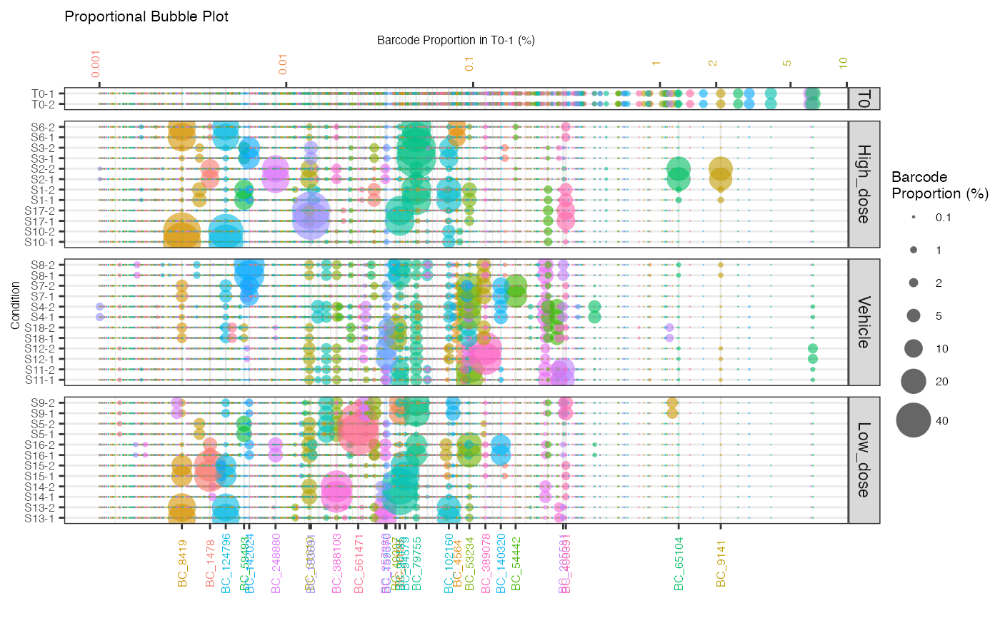

plotOrderedBubble.RdGenerate ordered proportional bubbleplots from raw count object with barcodes labelled above a specified threshold
plotOrderedBubble(
dgeObject,
title = "Proportional Bubble Plot",
orderSample = NULL,
group = NULL,
displaySamples = NULL,
displayBarcodes = NULL,
proportionCutoff = 10,
colorDominant = FALSE,
filterCutoff = NULL,
labelBarcodes = TRUE,
legend = TRUE,
pseudoCount = FALSE
)DGEList object with barcode counts.
Plot title (string). Default = `Proportional Bubble Plot`.
Name of sample to order by (string).
Optional, column name in sample metadata to group samples by (string).
Optional, vector of samples to display - keep the order of vector.
Optional, vector of barcodes to display.
barcodes represented at a percentage within any sample above this threshold will be labelled (decimal). Default = `10`.
Only color clones with frequency above `proportionCutoff` and others grey (boolean). Default = `FALSE`.
Barcodes below this threshold in `orderSample` will be filtered in all samples (boolean). Default = `TRUE`.
Label barcodes with a proportion larger than proportionCutoff in any sample (boolean). Default = `TRUE`.
Show a legend of bubble sizes (boolean). Default = `TRUE`.
Whether to add a pseudo count of 1 to all counts to display barcodes absent in T0 (boolean). Requires counts to be normalized. Default = `FALSE`.
Returns a bubbleplot of barcodes represented by proportion of total pool
data(test.dge)
plotOrderedBubble(test.dge, orderSample = "T0-1", filterCutoff = 0.001, group = "Treatment")
#> Warning: Vectorized input to `element_text()` is not officially supported.
#> ℹ Results may be unexpected or may change in future versions of ggplot2.
